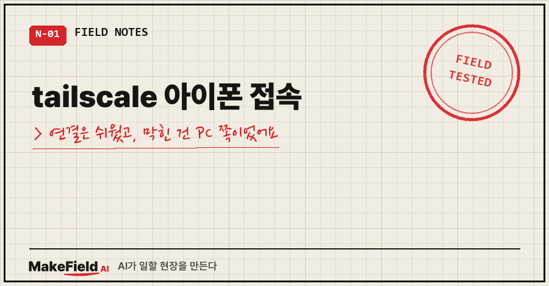
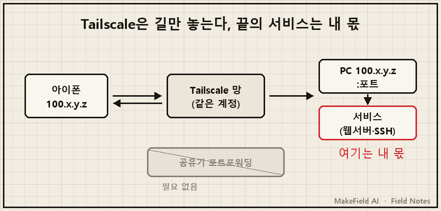
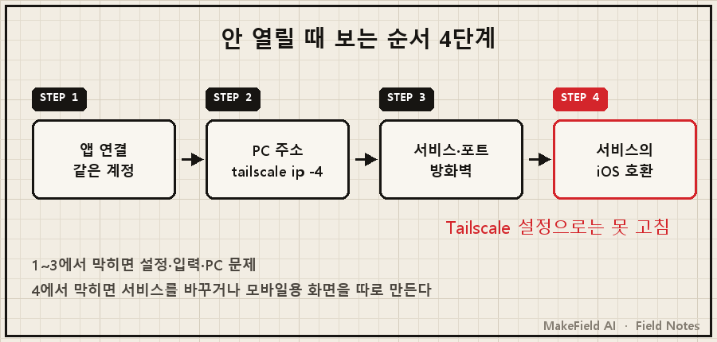
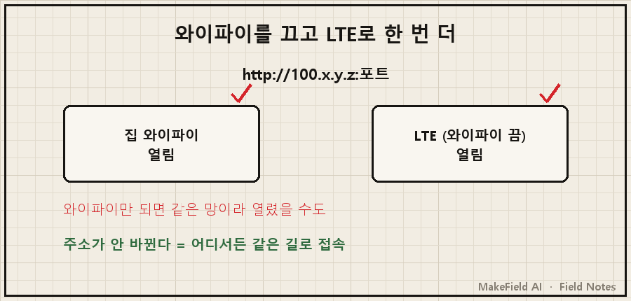

tailscale 아이폰 연결은 앱 설치 → VPN 구성 허용 → PC와 같은 계정 로그인, 이 세 단계면 끝나요.
막히는 건 대부분 그다음이에요. 아이폰 앱엔 연결됐다고 뜨는데 사파리에서 PC 주소를 치면 화면이 안 열리는 경우요.
원인은 거의 항상 PC 쪽(서비스 포트·방화벽)이나 서비스 자체에 있고, Tailscale 문제가 아닌 경우가 많았어요.
먼저 기억해둘 사실 하나요.
Tailscale은 기기마다 100.64.0.0~100.127.255.255 범위의 주소(100.x.y.z)를 하나씩 주고, 이 주소는 와이파이에서 LTE로 바꿔도 그대로예요(→ https://tailscale.com/docs/concepts/tailscale-ip-addresses).
그래서 아이폰에선 "PC의 100.x 주소 + 포트"만 알면 어디서든 같은 주소로 붙습니다.
저는 공장 설비 옆에서 제어·자동화를 15년째 만지는 엔지니어예요.
퇴근 뒤엔 그 손버릇으로 제 PC를 자동화하는데, 그걸 밖에서 아이폰으로 쓰고 싶어서 Tailscale을 깔았어요.
1. 증상 — 앱은 연결됐는데 사파리가 안 열려요
제가 실제로 본 장면은 두 단계였어요.
① 아이폰 Tailscale 앱: 연결됨
② 사파리 주소창: http://(PC의 100.x 주소):9000
→ 직접 만든 채팅 페이지는 열림
→ 같은 PC의 웹터미널(ttyd)은 "press enter to reconnect"만 반복같은 PC, 같은 Tailscale 연결인데 한쪽은 열리고 한쪽은 안 열렸어요.
Tailscale은 길만 놓아주고, 그 끝에 있는 서비스는 내 몫이에요.
공식 문서도 SSH·웹서버 같은 서비스는 대상 기기에서 직접 돌려야 한다고 적어뒀어요(→ https://tailscale.com/kb/1452/connect-to-devices).

2. 원인 — 막히는 자리는 네 군데예요
| 자리 | 증상 | 누구 문제 |
|---|---|---|
| ① 아이폰 VPN 꺼짐·다른 계정 | 어떤 주소도 안 열림 | Tailscale 설정 |
| ② PC 주소를 잘못 앎 | 계속 로딩만 됨 | 입력 실수 |
| ③ PC 서비스 꺼짐·포트·방화벽 | 연결 거부·시간 초과 | PC 쪽 |
| ④ 서비스가 iOS랑 안 맞음 | 열리긴 하는데 화면·입력이 깨짐 | 서비스 자체 |
제 경우 Tailscale 접속 자체는 깔끔했어요. 사흘을 태운 건 ④였어요.
웹터미널은 아이폰 사파리에서 웹소켓이 계속 끊겼고, 자체 인증서를 아이폰에 설치해 신뢰시킨 다음에도 "press enter to reconnect"가 남았어요.
이건 Tailscale을 아무리 만져도 안 풀리는 문제였어요. 이 부분은 아이폰에서 클로드 터미널처럼 쓰기 글에 따로 정리해뒀어요.
3. 해결 — 순서대로 하나씩
- 아이폰에 앱 설치(iOS 16 이상). App Store에서 Tailscale을 받고 Get Started를 누른 뒤, VPN 구성 설치를 허용하고 알림을 허용해요(→ https://tailscale.com/docs/install/ios).
- PC와 같은 계정으로 로그인. PC에서 쓰는 그 로그인 수단으로 들어가야 두 기기가 한 망(tailnet)에 묶여요.
- PC의 Tailscale 주소 확인. PC 명령창에서 아래 한 줄이면 나와요. 관리 콘솔 Machines 페이지에도 기기별 주소가 있어요.
tailscale ip -4
tailscale statustailscale status에 아이폰 이름이 같이 보이면 같은 망에 들어온 거예요(→ https://tailscale.com/docs/reference/tailscale-cli).
- PC 서비스와 방화벽 확인. 서비스가 그 포트로 실제로 떠 있어야 하고, 윈도우 방화벽이 막고 있으면 들어오는 규칙을 열어줘요. 저도 9000번 포트용 방화벽 규칙을 따로 넣었어요.
New-NetFirewallRule -DisplayName "My Web 9000" -Direction Inbound -Protocol TCP -LocalPort 9000 -Action Allow(관리자 PowerShell에서 실행 → https://learn.microsoft.com/en-us/powershell/module/netsecurity/new-netfirewallrule)
- 아이폰 사파리에서 접속.
http://100.x.y.z:포트형식으로 쳐요. MagicDNS가 켜져 있으면 IP 대신 기기 이름도 돼요(기본 켜짐, → https://tailscale.com/kb/1452/connect-to-devices).

4. 확인 방법 — 와이파이를 끄고 한 번 더
집 와이파이에서 열렸다고 끝내지 마세요. 같은 망 안이라 그냥 열렸을 수도 있거든요.
아이폰 와이파이를 끄고 LTE로만 같은 100.x 주소를 열어보세요. 그래도 열리면 Tailscale로 붙은 게 맞아요.

저는 원래 공유기 포트포워딩으로 밖에서 붙으려 했어요.
그런데 새 규칙이 재부팅 전엔 반영이 안 됐고, 외부 포트 번호가 다른 기기와 겹쳐 있었어요. 원격으로 붙어 있어서 재부팅도 못 걸었고요..
Tailscale은 이 과정이 통째로 필요 없었어요. 그래서 다음 날엔 아이폰용 HTTPS 서버도 아예 PC의 Tailscale 주소 기준으로 올렸어요.
5. 같은 증상, 다른 경우
- 열리긴 하는데 화면·키보드가 깨질 때 → 아이폰에서 클로드 터미널처럼 쓰기
- SSH로 붙었는데 세션이 자꾸 죽을 때 → 윈도우 SSH 끊김
- 포트포워딩 규칙을 지웠다가 원격이 끊겼을 때 → 포트포워딩 삭제
자주 묻는 질문
Q. tailscale 아이폰 접속에 공유기 포트포워딩이 필요한가요?
아니요. Tailscale 주소는 공용 인터넷에 노출되지 않고, 같은 망에 묶인 기기끼리 이 주소로 연결돼요(→ https://tailscale.com/docs/concepts/tailscale-ip-addresses). 저도 포트포워딩은 끝내 못 살렸는데 Tailscale로는 바로 붙었어요.
Q. 매번 앱을 켜야 하나요?
VPN On Demand를 쓰면 조건에 따라 자동으로 켜고 꺼요. 앱에서 오른쪽 위 프로필 사진을 누르고 VPN On Demand에 들어가면 Always·Only On·Except On 같은 규칙을 고를 수 있어요. 단, iOS에선 On Demand를 켤 수 있는 VPN 앱이 한 번에 하나뿐이에요(→ https://tailscale.com/docs/features/client/ios-vpn-on-demand).
Q. 연결은 되는데 특정 페이지만 안 열리면요?
같은 PC의 다른 페이지가 열리는지 먼저 보세요. 저는 채팅 페이지는 열리고 웹터미널만 깨져서 원인을 서비스 쪽으로 좁혔어요.
정리하면 tailscale 아이폰 연결 자체는 가장 쉬운 단계예요.
안 열리면 앱을 다시 깔기 전에 PC 주소·포트·방화벽, 그리고 서비스가 아이폰을 지원하는지부터 보세요.
여러분은 밖에서 PC에 붙을 때 어떤 길을 쓰세요?
밖에서 내 PC를 다루다 막힌 기록은 makefield.ai에도 모아두고 있어요.
출처
- Tailscale 아이폰 설치 → https://tailscale.com/docs/install/ios
- Tailscale 100.x 주소 → https://tailscale.com/docs/concepts/tailscale-ip-addresses
- 기기에 접속하기 → https://tailscale.com/kb/1452/connect-to-devices
- iOS VPN On Demand → https://tailscale.com/docs/features/client/ios-vpn-on-demand
- Tailscale CLI → https://tailscale.com/docs/reference/tailscale-cli
- 윈도우 방화벽 규칙(New-NetFirewallRule) → https://learn.microsoft.com/en-us/powershell/module/netsecurity/new-netfirewallrule
태그: #tailscale아이폰 #테일스케일아이폰 #아이폰테일스케일설정 #tailscale설치 #테일스케일접속안됨 #100x주소 #tailscaleip #MagicDNS #VPNOnDemand #아이폰원격접속 #아이폰에서PC접속 #윈도우방화벽포트 #포트포워딩없이 #원격PC접속 #MakeFieldAI